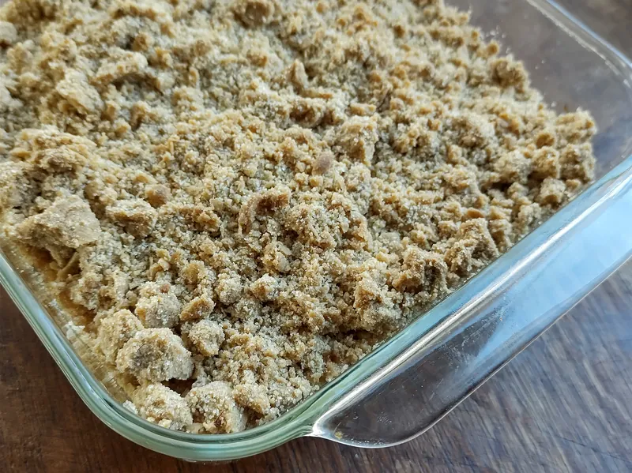

A Thistledown Year
A 148-page digital cookbook organized by the growing year. 64 recipes, a month-by-month buying guide, and a chapter on putting food away. $19.00, charged once.
$19.00 one-time charge · PDF · not a subscription
- What it is: one PDF file, 148 pages, about 38 MB.
- When you get it: A download link is emailed within 15 minutes of payment, and the same link stays valid for one year.
- Billing: $19.00 in US dollars, charged a single time at purchase. There is no recurring charge, no trial, no auto-renewal and therefore nothing to cancel later.
- Refunds: 14 days from purchase, no reason needed. Money back to the original payment method in 5 to 10 business days.
- Licence: personal, non-commercial use. Print it as often as you like for your own kitchen.
By ordering you agree to the Terms of Service and the Refund and Cancellation Policy.
What is inside
The book runs in the order the year does, starting in March because that is when a kitchen in this part of the country starts getting anything new. Each season opens with two pages on what is coming in, how to choose it and how long it keeps, and then the recipes.
Spring — 11 recipes, pages 14 to 42
Rhubarb four ways including a compote that keeps three weeks. A herb butter that solves most of April. Asparagus done two ways, one of which is just correctly. Two egg dishes for the weeks when there are suddenly too many.
Summer — 18 recipes, pages 43 to 82
The biggest chapter, because the gluts are biggest. Berries by the quart, tomatoes handled differently at three stages of ripeness, stone fruit, a blackberry cordial, and the freezing method that keeps July fruit worth baking with in February. The lattice-top blueberry pie published on this site is here too, with an extra page on making the crust a day ahead.
Autumn — 21 recipes, pages 83 to 122
Apples in eight different directions, from a quick sauce to a crumble that holds overnight. Winter squash roasted, souped and mashed. Pears in their two good weeks. The late-tomato oven method. The squash soup from this site is here, with a variation using the seeds.
Winter — 14 recipes, pages 123 to 148
Roots on a tray, braised red cabbage that is better on the second day, baked apples, and three things worth having in the freezer in October so that February is easier.
What a page looks like
Every recipe sits on a two-page spread, so nothing is ever split across a turn. The left page carries the headnote, the ingredient list with quantities in a column, the times and the yield. The right page carries the numbered method, a box headed Make it easier, storage and reheating, substitutions, the allergen line and the nutrition estimate.
The layout is deliberately plain: dark text on cream, one column of method, type large enough to read from across a counter. There are photographs, but they are on the chapter openers rather than scattered through the recipes, because a photograph between step four and step five is a place to lose your thumb.

Questions about the book
No. It is a single charge of $19.00. Nothing renews, nothing recurs, and there is no account or membership attached. We do not sell any subscription on this site at all.
No. It is a PDF file. We do not print or ship anything. You are welcome to print the whole thing at home or at a copy shop for your own use — the licence allows it.
If your device opens PDFs, yes. That covers every current version of Windows, macOS, iOS, iPadOS, Android and Linux, plus e-readers that accept PDFs. There is no special software and no app.
US customary: cups, tablespoons, ounces, pounds and degrees Fahrenheit. Where a weight matters — flour, butter, fruit for a pie — the weight is given first in ounces with the cup measure after it in brackets.
Three of the 64 do: the squash soup, the blueberry pie and the apple crumble are published here in full and also appear in the book, each with an extra half page the site version does not have. The other 61 are only in the book.
Write to us within 14 days and we refund it. You do not have to give a reason and you do not have to delete the file. See the Refund and Cancellation Policy.
Yes. Buy it and forward the download email to the person you are giving it to. The licence covers one household. We do not have a separate gifting flow because it would mean building an account system, and we would rather not.
Corrections, yes, and they are free — your download link stays valid for a year and always points at the current file. We are not planning a second edition. If one ever happens it would be a separate purchase and we would say so clearly.